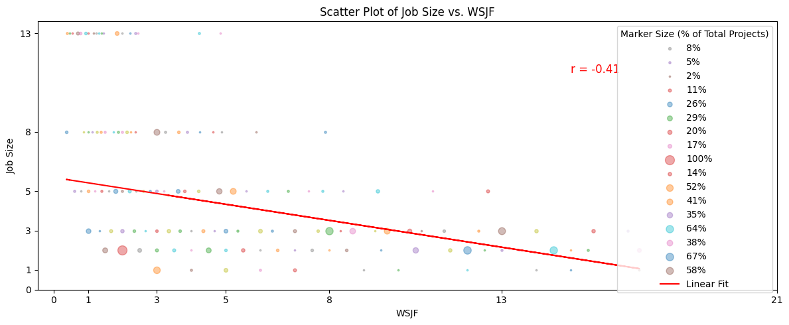
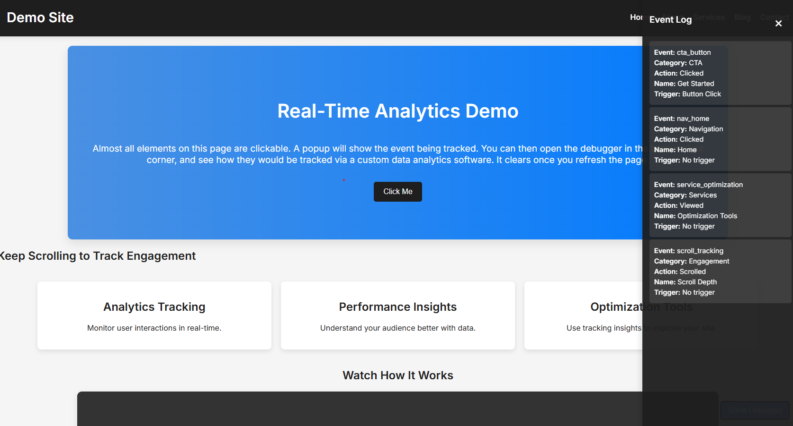
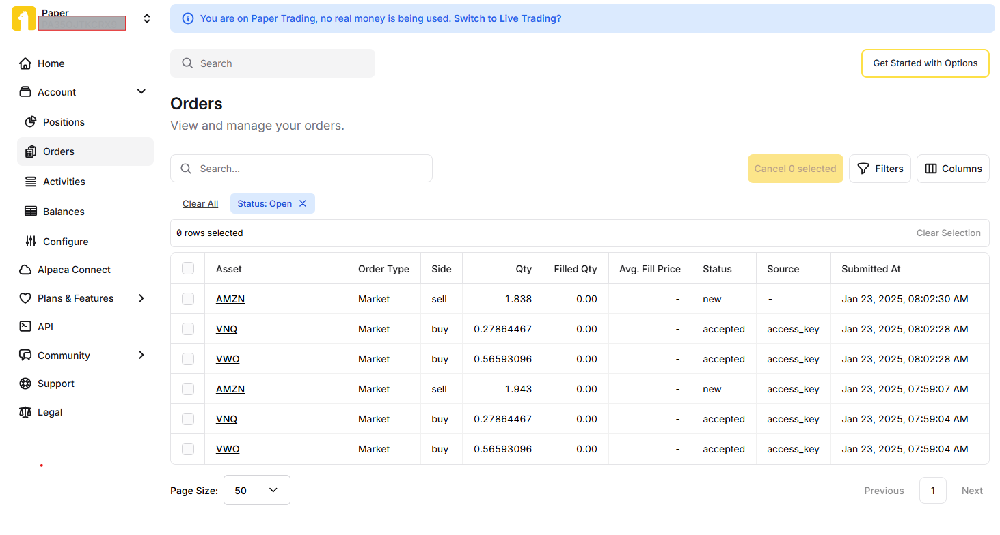
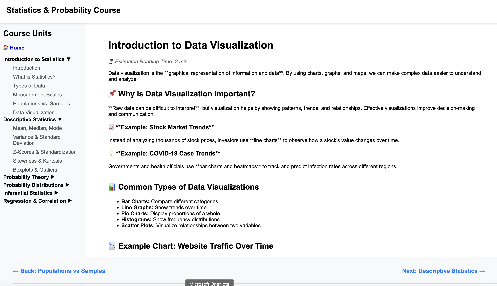
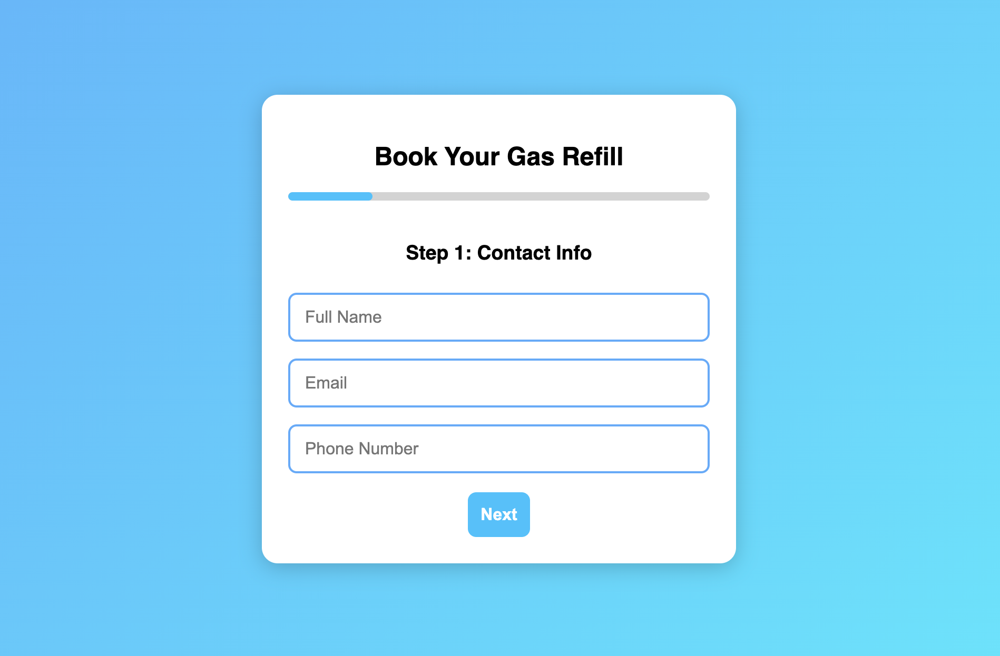

Designing a sales intelligence and deal-sourcing tool for alternative finance. Maps RIAs to fund flows and investment behavior using scoring models, probabilistic inference, and a hybrid data ingestion strategy (CSV + external APIs).
Architecture goal: convert fragmented private credit data into actionable intelligence for fund managers and deal teams.

API-driven data pipeline pulling from LeadConnector into Google Sheets via paged API calls. Automates invoice ingestion, per-rep sales tracking, multi-stage commission calculations, and monthly/YTD reporting.
Reduced manual reporting from 5–7 hours per cycle down to ~1 hour. Structured data model spans invoices, payments, reps, and commissions.
Backend endpoint in Google Apps Script that triggers data refreshes (YTD / monthly) and reads computed Sheets data. Wired up as a GPT Action so business metrics can be queried in plain English — scripts handle compute, GPT handles the interface.
Demonstrates layering an AI interface on top of existing operational data systems without rebuilding the underlying infrastructure.

Applied quantitative finance work: GARCH and MGARCH volatility modeling extended with external macro variables, plus ODE-based macroeconomic system modeling. Integrates live data from FRED and World Bank APIs for real-world calibration.
Focus on bridging academic quantitative methods with productized, data-driven applications.
Python bot that automatically rebalances and trades stocks based on an ETL flow and Random Forest algorithm. Uses real-time and historical data to analyze the market and make decisions. Runs daily.
Simulating GA and PIWIK Pro Tag Manager tracking, user behavior captures in a live debugger.

A storytelling application that generates a new chapter in an ever-growing story. A Python script queries top news and social media feeds, analyzes them with a sentiment score, and uses that to shape the tone of the day's chapter.
Using the previous day's storyline, OpenAI writes today's chapter with the same characters and plot — creating a growing story that the world writes.
A series of Python notebooks for data analysis methods (PERT, statistical significance, regression) using matplotlib, numpy, and pandas. One handles expert visualizations and calculations; the other is a create-your-own plotting tool.
Comprehensive college course on Statistics (101/102) and Probability Theory (201). Uses React.js and Chart.js for interactivity, deployment, and routing.
Python-based system monitoring tool that tracks CPU, memory, and disk usage over time, logs the data, and sends email alerts when performance thresholds are exceeded.
After 5 minutes of running, stops and creates a dashboard plot of all system information.
A Python application that monitors system health (disk memory, CPU usage), pushes values to a dashboard every few seconds, and plots change over time.
Demo in the thumbnail pulls from my current computer. Code is hosted locally.

Multi-step form with Google Maps API connector and availability scheduler. Submits dynamically to Google Sheets via Apps Script to collect, parse, clean, and send data.